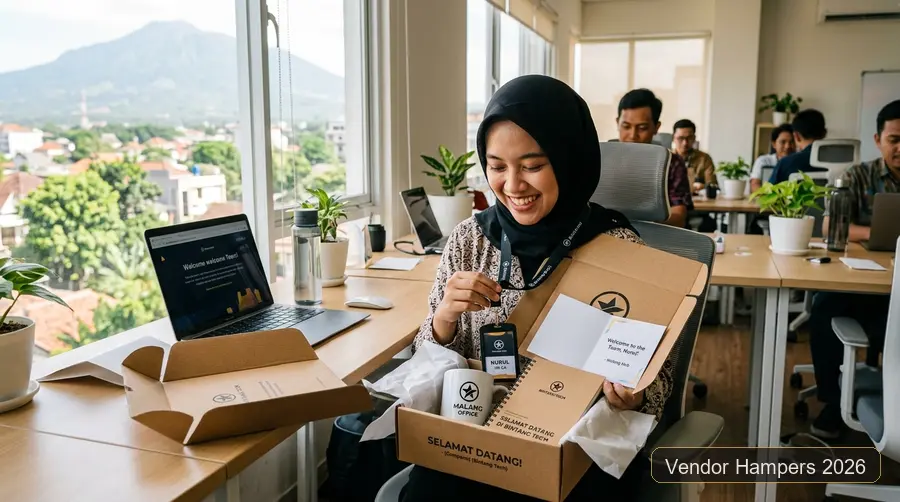

Hampers karyawan fungsional Malang adalah paket welcome kit berisi barang berguna dan berbranding untuk menyambut karyawan baru di hari pertama, sekaligus memperkuat employer branding perusahaan.
Hari pertama bekerja merupakan momen krusial dalam perjalanan seorang profesional. Sambutan yang hangat, terstruktur, dan berkesan tidak hanya menumbuhkan rasa memiliki (sense of belonging) yang kuat, tetapi juga membentuk persepsi awal karyawan terhadap profesionalisme dan budaya perusahaan tempat mereka berkarya.
Poin Kunci Hampers Karyawan Fungsional Malang:
- Fungsionalitas Nyata: Hampers karyawan fungsional berisi barang pakai harian yang berbranding, bukan bingkisan sekali pakai yang cepat terlupakan.
- Retensi & Loyalitas: SHRM mencatat program apresiasi yang relevan dengan gaya hidup dapat meningkatkan loyalitas karyawan hingga 68 persen (laporan tren 2026).
- Panduan Anggaran Jelas: CorporateGifts.ID 2026 memetakan anggaran welcome kit massal pada kisaran Rp50.000 sampai Rp150.000 per paket.
- Kurasi Fleksibel 3 Tier: Paket The Conference Pro, The Deal Closer, dan Executive Signature Box dari vendorhampers.web.id dapat disesuaikan dengan jenjang karyawan.
- Lead Time Terencana: Pesan satu sampai dua bulan sebelum tanggal masuk karyawan baru agar stok aman dan desain sempat direvisi.
- Apa itu hampers karyawan fungsional dan mengapa perusahaan di Malang memakainya?
- Mengapa welcome kit hari pertama berpengaruh pada employer branding?
- Apa bedanya hampers tradisional dengan hampers fungsional 2026?
- Barang apa saja yang cocok masuk hampers karyawan baru?
- Berapa budget hampers karyawan per orang?
- Paket vendorhampers.web.id mana yang cocok untuk welcome kit?
- Mengapa memilih vendor hampers yang berbasis di Malang?
- Seperti apa unboxing yang aesthetic untuk karyawan baru?
- Kapan waktu terbaik memesan hampers karyawan?
- Apa saja kesalahan umum saat menyiapkan hampers karyawan?
- Bagaimana langkah memesan hampers karyawan fungsional di vendorhampers.web.id?
- Bisakah hampers karyawan dipakai juga untuk onboarding dan event perusahaan?
- Bagaimana jika perusahaan juga butuh hampers untuk manajer atau klien?
- Bagaimana membuat isi hampers terasa personal?
- Kesimpulan
- FAQ Seputar Hampers Karyawan Fungsional Malang
Apa itu hampers karyawan fungsional dan mengapa perusahaan di Malang memakainya?
Hampers karyawan fungsional adalah paket hadiah berisi barang yang benar-benar dipakai karyawan sehari-hari, seperti lanyard, kaos, mug, dan stiker berlogo perusahaan. Perusahaan di Malang memakainya untuk menyambut karyawan baru di hari pertama kerja sekaligus membangun kesan profesional dan hangat sejak awal.
Malang Raya memiliki banyak kampus, usaha rintisan, hotel, restoran, dan perusahaan jasa yang terus merekrut tenaga baru. Di lingkungan seperti ini, hari pertama kerja adalah momen penting untuk memperlihatkan budaya perusahaan. Hampers karyawan fungsional membantu HRD menyampaikan pesan itu lewat benda nyata, bukan hanya lewat email selamat datang.
Perbedaannya dengan bingkisan biasa terletak pada fungsi. Lanyard dipakai setiap hari untuk kartu identitas, kaos dipakai saat hari kasual atau gathering, mug menemani meja kerja, dan stiker mempercantik laptop. Setiap barang punya alasan untuk dipakai berulang, sehingga logo perusahaan terlihat terus tanpa terasa memaksa.
Mengapa welcome kit hari pertama berpengaruh pada employer branding?
Welcome kit membentuk kesan pertama karyawan baru tentang budaya dan kepedulian perusahaan. SHRM mencatat program apresiasi yang relevan dengan gaya hidup dapat meningkatkan loyalitas karyawan hingga 68 persen, sehingga hampers layak dipandang sebagai investasi employer branding, bukan sekadar biaya. Hasilnya terlihat pada retensi dan reputasi perusahaan.
Generasi Milenial dan Gen Z kini banyak memegang peran operasional dan manajerial. Bagi kelompok ini, apresiasi adalah cerminan nilai perusahaan. Perusahaan yang menyambut karyawan baru dengan paket yang rapi dan personal memberi sinyal bahwa setiap orang diperhatikan sejak hari pertama. Rujukan tren apresiasi karyawan dapat ditelusuri melalui Society for Human Resource Management (SHRM).
Dari sisi biaya, loyalitas yang meningkat berarti perputaran karyawan yang lebih rendah. Biaya rekrutmen ulang, pelatihan ulang, dan hilangnya produktivitas dapat ditekan bila karyawan merasa dihargai. Angka 68 persen adalah acuan tren, sehingga hasil pada setiap perusahaan tetap bergantung pada budaya kerja dan kualitas program apresiasi secara keseluruhan.
Ketika karyawan mengunggah foto isi paketnya di media sosial, perusahaan mendapat organic branding yang terlihat oleh calon pelamar. Karena itu, estetika kemasan dan desain barang tidak boleh dianggap remeh.
Apa bedanya hampers tradisional dengan hampers fungsional 2026?
Hampers tradisional menekankan jumlah barang dan tampilan formal, sedangkan hampers fungsional 2026 menekankan kualitas, estetika, dan manfaat harian. Perbedaan ini menentukan apakah paket dipakai dan diingat karyawan, atau hanya disimpan lalu dilupakan setelah hari pertama. Kartu ucapan personal dan kemasan ramah lingkungan menjadi pembeda yang paling terlihat.
| Aspek | Hampers Tradisional | Hampers Fungsional 2026 |
|---|---|---|
| Fokus Utama | Kuantitas dan volume barang | Kualitas, estetika, dan fungsi harian |
| Relevansi | Satu isi untuk semua orang | Personal dan sesuai gaya hidup kerja |
| Keberlanjutan | Kemasan sekali pakai (limbah plastik) | Material ramah lingkungan & reusable |
| Dampak Visual | Standar dan kaku formal | Aesthetic, Instagramable, layak dibagikan |
| Dampak Psikologis | Kepuasan singkat sesaat | Kedekatan loyalitas jangka panjang |
Tabel di atas merangkum arah tren yang dirujuk laporan SeminarKit ID 2026. Intinya, setiap barang dalam hampers harus punya nilai guna nyata supaya anggaran perusahaan tidak terbuang sia-sia.

Barang apa saja yang cocok masuk hampers karyawan baru?
Isi inti welcome kit karyawan baru adalah lanyard, kaos perusahaan, mug custom, dan stiker. Untuk memperkaya paket, tambahkan kategori tren 2026 seperti tech essentials, wellness, produk ramah lingkungan, atau set ibadah travel sesuai kebutuhan tim. Kombinasi ini fleksibel untuk anggaran kecil maupun besar.
- Lanyard dan Kartu Identitas: Barang pertama yang langsung dipakai karyawan di hari pertama untuk akses kantor.
- Kaos Perusahaan: Cocok untuk hari kasual, gathering, dan kegiatan tim dengan bahan katun combed yang sejuk.
- Mug atau Tumbler Custom: Menemani meja kerja dan mendukung kebiasaan minum sehat sepanjang hari.
- Stiker Laptop dan Botol: Murah, ringan, estetik, dan mudah dibagikan ke sesama rekan kerja.
- Tech Essentials: Power bank tipis, flashdisk OTG, atau earphone bluetooth untuk menunjang kerja mobile.
- Wellness dan Eco-Friendly: Essential oil, artisan tea, notebook serat bambu, atau cutlery set kayu ramah lingkungan.
- Gift Voucher Digital: Pelengkap fleksibel untuk tim remote atau hybrid yang tersebar di berbagai kota.
Detail desain empat barang inti, mulai dari pilihan bahan sampai teknik branding, dibahas di panduan welcome kit karyawan baru custom Malang.
Berapa budget hampers karyawan per orang?
CorporateGifts.ID 2026 menyarankan tiga tier: Rp50.000 sampai Rp150.000 untuk karyawan umum, Rp150.000 sampai Rp350.000 untuk manajemen menengah, dan Rp350.000 sampai Rp750.000 lebih untuk eksekutif atau klien VIP. Angka ini acuan awal, bukan harga final. Rentang ini membantu HRD menyusun proposal anggaran yang tepat.
| Tier Pengadaan | Anggaran per Paket | Fokus Kurasi Isi |
|---|---|---|
| Karyawan (Mass Gift) | Rp50.000 - Rp150.000 | Barang harian fungsional: tumbler, lanyard, stiker, daily notebook |
| Manajemen Menengah | Rp150.000 - Rp350.000 | Gaya hidup & produktivitas: desk organizer set, power bank, polo shirt |
| Eksekutif / Klien VIP | Rp350.000 - Rp750.000+ | Eksklusivitas & material premium: leather agenda, vacuum flask, packaging kayu |
Harga akhir bergantung pada jumlah pesanan, bahan, teknik branding, dan kemasan. Cara menghitung total anggaran secara rinci ada di panduan harga hampers karyawan Malang per paket.
Paket vendorhampers.web.id mana yang cocok untuk welcome kit?
The Conference Pro cocok sebagai titik awal welcome kit massal, The Deal Closer untuk level manajerial, dan Executive Signature Box untuk direksi atau tamu VIP. Isi final tiap paket dapat dikonsultasikan dan disesuaikan dengan logo, warna, serta anggaran perusahaan. Konsultasi awal membantu memastikan kecocokan.
The Conference Pro
Pilihan paling praktis untuk onboarding batch karyawan baru dalam jumlah banyak, seminar kampus, atau event tahunan perusahaan.
The Deal Closer
Pilihan tepat untuk jenjang supervisor dan manajer menengah yang membutuhkan tampilan lebih elegan, rapi, dan fungsional.
Executive Signature Box
Pilihan prestisius untuk direksi, partner bisnis, dan tamu kehormatan dengan sentuhan hardbox magnetik, deboss kulit, dan finishing emas.
Perusahaan di Malang dapat berkonsultasi langsung melalui vendorhampers.web.id untuk meminta rekomendasi isi, mockup desain 3D gratis, dan penawaran sesuai kuota tim Anda.
Mengapa memilih vendor hampers yang berbasis di Malang?
Vendor yang berbasis di Malang memudahkan koordinasi produksi, pengecekan sampel langsung di workshop, dan pengiriman cepat ke kantor di seluruh Malang Raya. Selain lokasi, nilai vendor ditentukan oleh kecepatan respons, kualitas kemasan, kebijakan pengembalian, dan kemampuan mengelola distribusi.
- Respons Cepat dan Desain Custom: Vendor mampu menyiapkan mockup digital 3D sebelum produksi berjalan.
- Unboxing Experience: Kemasan memberi kesan visual pertama yang rapi, bersih, dan berstandar korporat.
- Kebijakan Pengembalian: Tersedia alur jelas bila ada barang cacat saat proses pengiriman massal.
- Logistik Terpadu: Distribusi ke berbagai kantor cabang di Jawa Timur tetap tepat waktu dan terpantau.
Empat kriteria tersebut mengacu pada panduan DatascripMall 2026. Dengan bermitra bersama vendor terpercaya, tim HRD dapat lebih fokus pada strategi pengembangan talenta tanpa terbebani urusan logistik pengadaan.
Seperti apa unboxing yang aesthetic untuk karyawan baru?
Unboxing yang aesthetic memakai kemasan kraft atau rigid hardbox bertekstur, logo subtil dengan teknik emboss atau grafir laser, palet warna earth tone atau pastel yang modern, serta kartu ucapan yang menyebut nama karyawan secara personal.
Tujuannya membuat karyawan ingin memotret dan membagikannya secara spontan di media sosial. Kemasan adalah alat komunikasi pertama sebelum produk digunakan. Susunan isi, pilihan warna, dan gaya penulisan kartu ucapan dijelaskan lengkap di panduan unboxing welcome kit karyawan baru.
Kapan waktu terbaik memesan hampers karyawan?
Waktu terbaik memesan adalah satu sampai dua bulan sebelum hari pertama karyawan baru mulai bekerja atau sebelum musim ramai akhir tahun. Pemesanan lebih awal membantu menghindari lonjakan harga peak season dan keterbatasan stok material.
Untuk perusahaan yang menerima karyawan baru secara bergelombang, buatlah jadwal per kuartal. Kaos dan lanyard dapat diproduksi sekali dalam jumlah cukup besar untuk efisiensi harga grosir, sedangkan kartu ucapan dan isian personal disiapkan mendekati tanggal masuk masing-masing batch.
Apa saja kesalahan umum saat menyiapkan hampers karyawan?
Kesalahan paling umum adalah memilih barang hanya karena murah, memasang logo terlalu besar, mengabaikan ukuran kaos, dan memesan terlalu mepet. Menghindari kelima hal ini menghemat biaya, mempercepat proses, dan meningkatkan kepuasan penerima paket:
- Mengisi paket dengan banyak barang murah yang tidak tahan lama, padahal satu atau dua produk berkualitas jauh lebih berkesan.
- Logo berukuran raksasa yang mengurangi nilai estetika dan membuat karyawan enggan memakainya di ruang publik.
- Tidak mengumpulkan data ukuran kaos sebelum produksi massal dimulai.
- Memakai bahasa surat birokrasi kaku di kartu ucapan yang seharusnya hangat dan bersahabat.
- Tidak meminta mockup digital atau sampel fisik sebelum pesanan massal dicetak.
Bagaimana langkah memesan hampers karyawan fungsional di vendorhampers.web.id?
Langkahnya sederhana dan transparan: tentukan jumlah dan tier anggaran, pilih paket, kirim logo serta brand guideline, setujui mockup desain, lalu jadwalkan produksi dan pengiriman. Konsultasi lewat vendorhampers.web.id membantu tim HR menentukan isi yang paling tepat:
- Langkah 1: Hitung jumlah karyawan baru dan tentukan alokasi anggaran per paket.
- Langkah 2: Pilih paket acuan: The Conference Pro, The Deal Closer, atau Executive Signature Box.
- Langkah 3: Kirimkan file logo vektor, palet warna brand, dan daftar ukuran apparel.
- Langkah 4: Tinjau mockup desain 3D yang disiapkan tim kurator dan setujui revisi.
- Langkah 5: Konfirmasi jadwal produksi massal dan tanggal penerimaan di kantor Anda.
Bisakah hampers karyawan dipakai juga untuk onboarding dan event perusahaan?
Bisa. Barang yang sama, seperti lanyard, notebook, dan tumbler, dapat dikemas ulang untuk sesi onboarding, seminar, workshop, maupun perayaan milestone perusahaan. Perbedaannya, hampers event menekankan kebutuhan peserta di hari acara dan biasanya diproduksi dalam jumlah lebih besar.
Jika perusahaan Anda juga menggelar seminar atau pelatihan korporat, pelajari panduan hampers event perusahaan agar kebutuhan peserta acara dan karyawan baru dapat disatukan dalam satu perencanaan pengadaan yang hemat waktu.
Bagaimana jika perusahaan juga butuh hampers untuk manajer atau klien?
Gunakan tier yang lebih tinggi dengan material premium dan teknik branding yang lebih halus. Paket untuk manajer, direksi, atau klien VIP sebaiknya dibedakan dari welcome kit massal agar setiap penerima merasa dihargai sesuai perannya. Pembedaan ini juga menjaga anggaran tetap proporsional dan mudah dipertanggungjawabkan.
Pendekatan tersebut dibahas mendalam pada panduan hampers corporate premium 2026, termasuk pemilihan bahan eksklusif dan etika pemberian hadiah korporat.
Bagaimana membuat isi hampers terasa personal?
Personalisasi dimulai dari nama panggilan di kartu ucapan, warna yang sesuai identitas perusahaan, dan pilihan barang yang cocok dengan karakter penerima. Cukup dua atau tiga sentuhan personal sudah membuat paket terasa dipikirkan secara matang, bukan sekadar produksi massal tanpa jiwa.
Sebagai inspirasi, konsep memilih isi berdasarkan kepribadian penerima dibahas di panduan ide isi hampers bridesmaid estetik sesuai kepribadian. Prinsip yang sama dapat diterapkan pada welcome kit karyawan, misalnya menyesuaikan tambahan isian khusus untuk tim kreatif, tim lapangan, atau tim administrasi.
Kesimpulan
Hampers karyawan fungsional Malang bekerja paling baik bila isinya berguna, desainnya rapi, anggarannya jelas, dan dipesan lebih awal:
- Pilih barang yang dipakai harian: Lanyard, kaos berkualitas, mug/tumbler, dan stiker laptop.
- Gunakan acuan budget bertingkat: Tier Rp50.000 sampai Rp750.000+ untuk menyusun proposal yang realistis.
- Pesan satu sampai dua bulan sebelumnya: Menghindari ketergesaan revisi desain dan kehabisan stok.
- Rancang unboxing aesthetic: Terapkan palet warna earth tone dan selipkan kartu ucapan personal bernada hangat.
Konsultasikan Welcome Kit Karyawan Baru Perusahaan Anda di Malang
Ceritakan jumlah karyawan baru, tier anggaran, dan gaya brand Anda kepada tim kurator Vendor Hampers untuk mendapatkan proposal paket, sampel material, dan mockup desain 3D gratis.
Diskusikan Welcome Kit Bersama Tim HR SpecialistPertanyaan Seputar Hampers Karyawan Fungsional Malang (FAQ)
Ciptakan Hari Pertama Kerja yang Berkesan bagi Karyawan Anda
Dapatkan katalog lengkap hampers karyawan Malang, sampel fisik produk, dan proposal anggaran resmi dari Vendor Hampers sekarang juga.
Hubungi Tim Procurement KamiPublished by Yolanda Deva Apriliana Putri (YUL)
Content Writer di Vendor Hampers, berfokus pada kurasi corporate gift VIP, perpaduan kriya heritage lokal Nusantara, dan psikologi unboxing premium untuk korporasi modern di seluruh Indonesia.